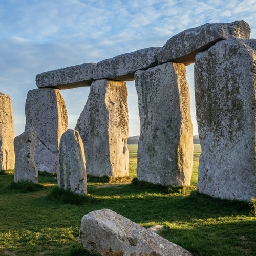

自然ツアー
日帰りツアー
1日目

イングランド南部ソールズベリーの平原に突如現れる巨石建造物。 ストーンヘンジは、紀元前 3000 年頃の 3 つの期間にわたって建設されたと考えられています。 紀元前1500年まで
1泊2日ツアー
1日目
イングランド南部ソールズベリーの平原に突如現れる巨石建造物。 ストーンヘンジは、紀元前 3000 年頃の 3 つの期間にわたって建設されたと考えられています。 紀元前1500年まで
2日目

バーリング ギャップとセブン シスターズは、イングランド南部のイースト サセックスにある白亜紀のチョークの海食崖です。 なだらかな起伏のある丘陵を削り取ってできた白い断崖の姿がその名の由来。